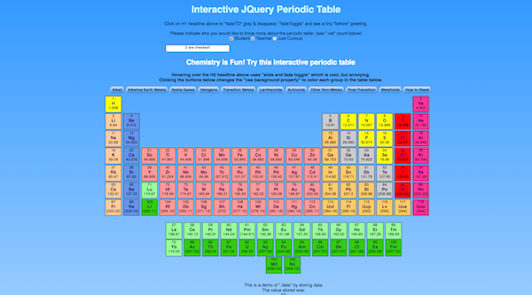
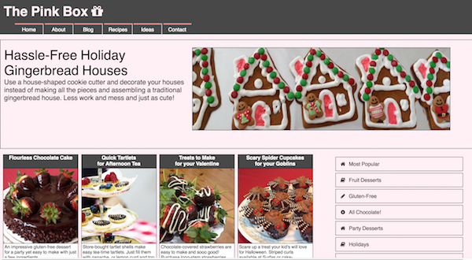
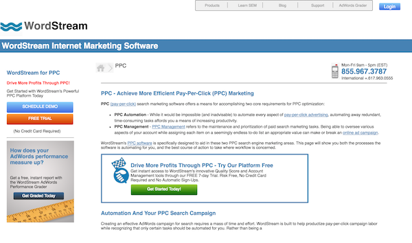
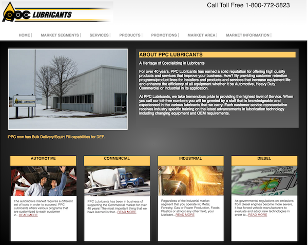

 
 


Summary of Qualifications:
Provide digital and strategic marketing, branding, marketing communications, web front-end development, web project management (new sites and redesigns), email marketing, technical SEO audits and optimization, graphic design, illustration, and web analysis services for businesses, startups, and nonprofit organizations on a freelance, flexible, project, or remote/telecommute basis.
Experienced professional (over 25 years experience) proficient in both the technical and design aspects of web development as well as a strong background in senior marketing management and digital marketing.
Earned a BA degree in Psychology from the University of California, Irvine (UC Irvine) in only 3 years with Dean's List Honors. Post-graduate studies include extension courses at UC Irvine and also a year-and-a-half of law school at Western State University. Currently enrolled in a full-stack coding cohort to advance my skills in web and app development. I recently co-founded a tech startup aimed at helping more women start and grow their businesses through our app which is due to launch in the summer of 2016.
Proficient In:
- HTML4 and HTML5
- CSS2 and CSS3
- JQuery and JQuery UI
- Javascript
- Wordpress CMS
- Technical SEO, Google Analytics, Google Search Console, MOZ Analytics
- Digital Marketing (Salesforce CRM, Pardot, Email, Inbound, SEO/SEM)
- Adobe Creative Suite (Illustrator, InDesign, Photoshop, Dreamweaver)
- Strategic Marketing, Director of Marketing
- Quality Analysis - detect and fix technical issues, MS TFS, Github, Jira
- Web Development Management and Web Project Management